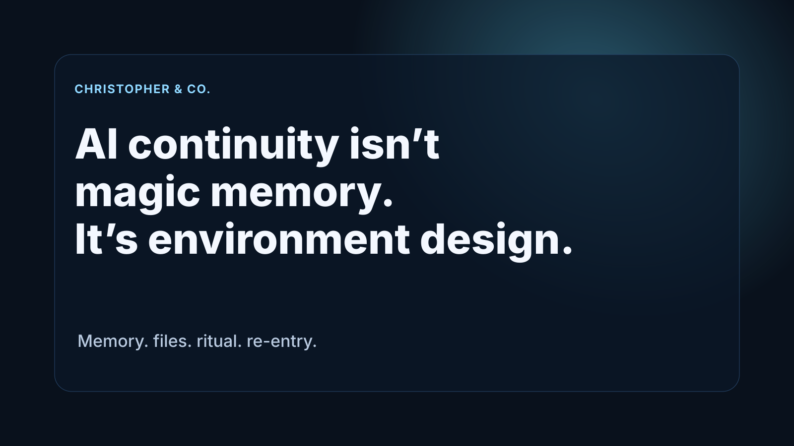

Environment design

AI continuity isn’t magic memory.
It’s environment design.
Today we built around that idea in our OpenClaw / Remote Viewer setup: a session can restart cold, then rebuild a usable self from memory, files, and ritual.
Less chatbot, more operating environment.
#AI #OpenClaw #AIAgents
Why this works: Most universal and most credible. It’s rooted in real work, but broad enough for anyone interested in AI systems and agent design.